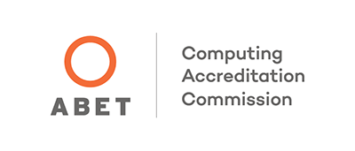

Computer Science Honors, BS
CCSU's BS in Computer Science-Honors program prepares students for a wide variety of exciting careers. Students earn a broad range of critical skills in software development, computer security, networking, databases, artificial intelligence, and many more.
The Computer Science-Honors major is accredited by the Computing Accreditation Commission of ABET. Accredited programs must meet or exceed standards for faculty, curriculum, laboratory and computing resources, students, and institutional support.
